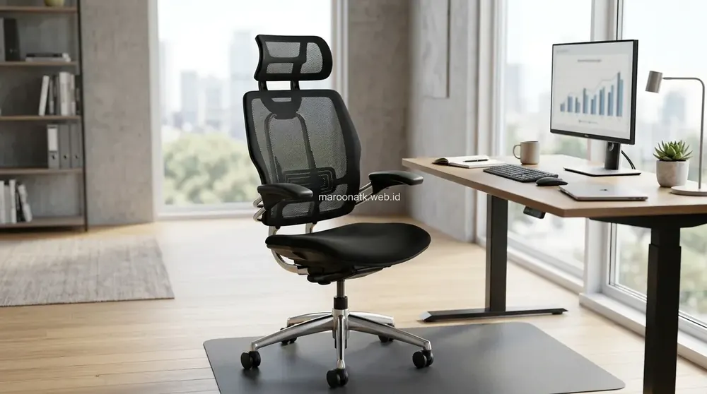
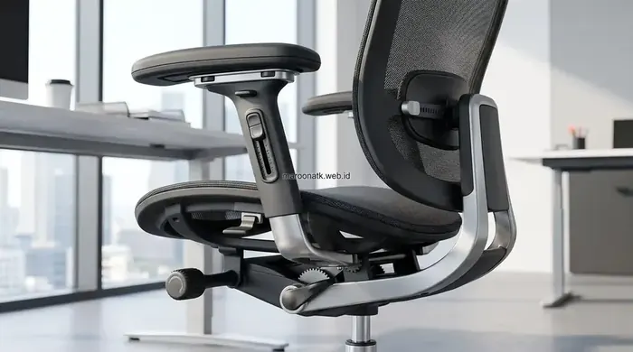
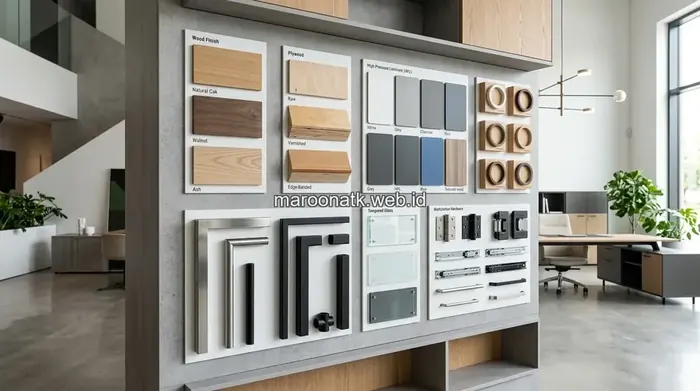

Pentingnya Memilih Kursi Kantor Ergonomis yang Tepat
Jawaban singkat: kursi kantor ergonomis yang baik sebaiknya memiliki dukungan lumbar, armrest yang dapat diatur, tinggi dudukan yang dapat disesuaikan, serta sandaran yang mendukung posisi tubuh saat bekerja. Pemilihan kursi tidak hanya berdasarkan tampilan, tetapi juga kesesuaian dengan postur pengguna, tinggi meja, durasi duduk, dan kebutuhan pekerjaan. Fitur ergonomis membantu pengguna mendapatkan posisi kerja yang lebih nyaman dan dapat disesuaikan.
Duduk di depan meja kerja selama 7 hingga 9 jam sehari merupakan rutinitas umum bagi sebagian besar staf korporat modern. Tanpa penopang tubuh yang tepat, posisi duduk statis dapat menimbulkan tekanan berlebih pada diskus tulang belakang bagian bawah, memicu ketegangan otot leher, serta menyebabkan kelelahan fisik yang menurunkan fokus kerja.
Oleh sebab itu, pengadaan kursi kerja bukan lagi sekadar memilih perabot dengan tampilan visual menarik, melainkan investasi strategis dalam kesehatan kerja dan kenyamanan staf. Kursi yang dirancang secara ergonomis berfungsi membantu mendukung postur duduk alami, memfasilitasi pergerakan dinamis, serta dapat mengurangi faktor ketidaknyamanan akibat posisi duduk yang kurang sesuai.

Pentingnya Kursi Kantor Ergonomis untuk Produktivitas Karyawan
Bagaimana perabot ergonomis berkontribusi terhadap fokus kerja harian dan kenyamanan operasional jangka panjang.
Fitur-Fitur Penting yang Wajib Diperhatikan
Dalam mengevaluasi katalog furniture kantor, tim purchasing dan manajemen fasilitas perlu memeriksa keberadaan fitur mekanis berikut:
1. Penopang Pinggang (Lumbar Support)
Tulang belakang manusia memiliki kelengkungan alami menyerupai huruf 'S'. Fitur lumbar support—baik yang bersifat fixed dengan kontur ergonomis maupun yang dapat diatur ketinggian dan kedalamannya—berfungsi mengisi celah di area pinggang bawah sehingga mencegah pengguna membungkuk ke depan.
2. Sandaran Tangan Fleksibel (Adjustable Armrest)
Sandaran tangan yang dapat diatur tinggi, maju-mundur, maupun sudut rotasinya (2D/3D/4D) memungkinkan siku membentuk sudut 90 derajat sejajar dengan permukaan meja kerja. Hal ini membantu mengurangi beban beban gravitasi pada sendi bahu dan otot leher saat mengetik.
3. Pengatur Ketinggian Dudukan (Pneumatic Seat Height)
Silinder hidrolik (gas lift) memungkinkan penyesuaian tinggi kursi agar kedua telapak kaki pengguna dapat menapak rata di lantai sementara paha berada dalam posisi horizontal, menjaga sirkulasi darah di area kaki tetap lancar.
4. Sudut Sandaran Dinamis (Tilt & Reclining Mechanism)
Kemampuan sandaran untuk direbahkan antara sudut 100 hingga 120 derajat dengan fitur pengunci (tilt lock) serta pengatur resistensi (tension control) memfasilitasi peregangan otot punggung di sela-sela konsentrasi kerja.

Mekanisme penyesuaian multi-sudut pada sandaran dan sandaran tangan memberikan fleksibilitas adaptasi terhadap postur unik setiap individu.

Tips Menata Furniture Kantor untuk Meningkatkan Produktivitas Kerja
Panduan harmonisasi layout meja, kursi, dan lemari arsip untuk sirkulasi ruang kerja yang optimal.
Tabel Evaluasi Fitur Kursi Kantor Ergonomis
Gunakan tabel parameter berikut saat menyeleksi sampel unit atau membandingkan proposal spesifikasi kursi kantor B2B:
| Fitur Ergonomis | Fungsi Mekanis | Hal yang Perlu Diperhatikan |
|---|---|---|
| Lumbar Support | Mendukung kelengkungan area pinggang | Sesuaikan dengan postur dan bentuk punggung pengguna |
| Adjustable Armrest | Menyesuaikan posisi sandaran lengan | Tinggi dan arah penyesuaian harus sejajar meja |
| Seat Height | Menyesuaikan tinggi duduk pengguna | Pastikan sesuai tinggi meja dan kaki menapak lantai |
| Backrest | Mendukung punggung secara menyeluruh | Bentuk kontur dan tingkat kelenturan material mesh |
| Seat Depth | Menyesuaikan panjang paha pengguna | Tidak terlalu dalam agar bagian belakang lutut bebas |
| Reclining Mechanism | Mengatur kemiringan sandaran badan | Sesuaikan dengan aktivitas fokus maupun santai |
| Base & Castor | Menopang stabilitas dan mobilitas kursi | Kaki bintang kokoh dengan roda nilon/PU yang halus |

Panduan Memilih Material Pengadaan Furniture Kantor yang Tahan Lama
Mengenal karakteristik kain pelapis, busa cetak (molded foam), dan rangka baja untuk perabot tahan pakai.
Menyesuaikan Kursi dengan Kebutuhan Perusahaan
Tidak ada satu model kursi yang cocok untuk semua orang secara seragam. Keputusan pemilihan tipe kursi di lingkungan korporat perlu mempertimbangkan beberapa variabel:
- Variasi Postur dan Tinggi Badan: Staf kantor memiliki postur tubuh yang beragam. Memilih model dengan rentang penyesuaian (adjustability) yang luas memastikan kursi dapat beradaptasi dengan mayoritas pengguna.
- Lama Durasi Duduk: Karyawan operasional yang duduk terus-menerus lebih dari 6 jam membutuhkan kursi high-back dengan headrest, sedangkan staf dengan mobilitas tinggi cukup menggunakan model mid-back yang ringan.
- Sirkulasi Udara Ruangan: Material sandaran berbahan jaring elastis (breathable mesh) sangat dianjurkan untuk iklim tropis guna mencegah rasa gerah di punggung.
- Kesesuaian Dimensi dengan Meja Kerja: Pastikan lebar kursi dan lengan dapat masuk dengan leluasa di bawah kolong meja saat tidak digunakan agar tidak memakan ruang lorong.
Konsultasikan Kebutuhan Kursi Kerja Ergonomis Perusahaan Anda
Layanan Demo Unit, Penawaran B2B Resmi, dan Pilihan Model Lengkap
Diskusikan kebutuhan peremajaan atau pengadaan baru kursi kantor ergonomis bersama spesialis furnitur B2B dari MAROON ATK.
Kesimpulan: Investasi Tepat untuk Kenyamanan dan Postur Kerja Sehat
Rangkuman Keputusan Furniture Kantor
Memilih kursi kantor ergonomis yang tepat merupakan langkah nyata dalam menciptakan lingkungan kerja yang kondusif dan mendukung kesejahteraan tim.
- Prioritaskan Fitur Penopang: Pastikan keberadaan lumbar support, armrest yang dapat diatur, dan silinder hidrolik berkualitas standar BIFMA.
- Fleksibilitas Pengaturan: Fitur penyesuaian multi-arah memudahkan setiap individu menyesuaikan posisi duduk idealnya.
- Solusi Furniture Terpadu: MAROON ATK menyediakan ragam pilihan kursi kerja ergonomis dengan kualitas teruji untuk kebutuhan korporat Anda.
Pertanyaan Umum (FAQ) Kursi Kantor Ergonomis
Kursi kantor ergonomis yang baik memiliki sistem penyangga tulang belakang (lumbar support), sandaran tangan (armrest) yang dapat diatur ketinggiannya, mekanisme pengatur tinggi dudukan hidrolik, sudut reclining sandaran yang fleksibel, serta material dudukan berbahan jaring (mesh) atau busa berdensitas tinggi.
Lumbar support berfungsi menjaga kelengkungan alami tulang belakang bagian bawah saat duduk, membantu mendistribusikan beban tubuh secara merata, dan mengurangi faktor ketegangan otot pinggang selama durasi kerja yang panjang.
Adjustable armrest memungkinkan pengguna menyesuaikan tinggi dan posisi penopang lengan sejajar dengan permukaan meja kerja, sehingga membantu mengurangi beban dan ketegangan pada bahu serta leher saat mengetik.
Evaluasi kebutuhan berdasarkan durasi pemakaian harian karyawan, keselarasan dimensi kursi dengan tinggi meja kerja, kemampuan penyesuaian fitur mekanis, kualitas rangka kaki bintang (base), serta daya tahan material pelapis terhadap sirkulasi udara ruang kerja.

Arby Ardiansyah
Spesialis pengadaan perlengkapan kantor dengan pengalaman dalam standardisasi inventaris B2B, manajemen tata ruang kerja ergonomis, dan solusi pengadaan furniture kantor di Indonesia.